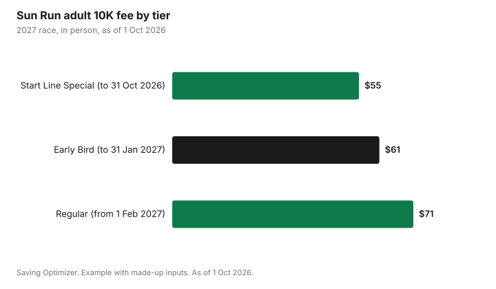

Sports · Canada
Running Race Entry Fees in Canada: How to Pay Less for 5Ks, 10Ks and Marathons

The biggest saving on a running race in Canada is timing: most big races raise prices in steps, so registering in the first tier can save 20% or more. The Vancouver Sun Run's 2027 adult 10K costs $55 until 31 October 2026, then $61, then $71 from 1 February 2027. Choosing a no-shirt bib, racing in the youth or senior category if you qualify, and running free weekly parkrun 5Ks for training and timed results cut costs further. Before paying, check the refund and transfer rules, because many races, including the Sun Run, make registrations final.
Key takeaways
- Price tiers rise over time: the Sun Run adult 10K goes from $55 to $61 to $71.
- Sun Run youth (18 and under) and seniors (65 and older): $27, $32, $42.
- BMO Vancouver Marathon 2027: $190 full, $150 half, $60 8K; $10 less without a shirt.
- Taxes and online or processing fees are added on top.
- parkrun 5Ks are free every Saturday morning.
- Example with made-up inputs: one runner saves $49 on a season of races.
How race pricing works
Large races publish a schedule of rising prices. The earliest tier is cheapest, and the final weeks before a race are the most expensive. Fees shown on the page usually exclude taxes and the registration platform's processing fee, so the amount you pay is higher than the headline. What you get for the fee varies: the Sun Run says entry includes a souvenir technical shirt, a personalized bib with a timing tag, water stations along the course, live entertainment and a finishers' party at BC Place.
Vancouver Sun Run 2027 fees
| Tier and dates | Adults 19 to 64 | Youth 18 and under, seniors 65+ |
|---|---|---|
| Start Line Special, 8 Sep to 31 Oct 2026 | $55 | $27 |
| Early Bird, 1 Nov 2026 to 31 Jan 2027 | $61 | $32 |
| Regular, 1 Feb to noon 15 Apr 2027 | $71 | $42 |
Waiting from October to February costs an adult $16, or about 29% more. The Sun Run says there is no longer a virtual option for individual 10K runners; virtual entry is only available in team categories, at $35 early and $45 regular. It also says registrations are final, with no refunds, deferrals or transfers, and that processing fees and taxes are added at checkout.
BMO Vancouver Marathon 2027 fees
The BMO Vancouver Marathon, held annually on the first Sunday of May, lists its 2027 fees on Race Roster. Each fee below includes an event shirt; choosing a green bib without a shirt takes $10 off. Taxes and online fees are extra. Check the registration page for the current tier and its policy on transfers before buying.
| Distance | With event shirt | Green bib, no shirt |
|---|---|---|
| Marathon | $190 | $180 |
| Half marathon | $150 | $140 |
| 8K | $60 | $50 |
Free timed runs: parkrun
parkrun Canada organizes free, timed 5k events every Saturday morning. You register once, and there is no time limit, so you can walk, jog or run. parkrun says there are currently 65 events around the country, with more being added, and that you can also take part by volunteering or spectating. Because it is weekly, it doubles as a progress check: run the same course once a month and you can see whether your training is working without paying for a race. For many runners, parkrun replaces several paid 5Ks a year: you get a timed result, a course to race against yourself and a group to run with, at no cost. Check parkrun's site for the location nearest you.
Other ways to pay less
- Register in the first tier for your goal race, once you are confident you can train for it.
- Choose a no-shirt bib if offered; you probably already have plenty of race shirts.
- Use youth or senior pricing if you qualify; at the Sun Run it is about half the adult price.
- Join a team if a team rate or company sponsorship is available.
- Volunteer at a race; some races offer volunteers perks, so ask the organizer.
- Pick local races to avoid hotel and travel costs, which can dwarf the entry fee.
- Join a running club with group training runs instead of paying for a training program.
Refunds, deferrals and transfers
Rules vary widely, and they matter if you get injured. The Sun Run makes all registrations final. Other races allow a transfer to another runner, a deferral to next year, or a partial refund before a cut-off date, sometimes for a fee. Read the policy before you pay, and register in the cheap tier only for a race you are likely to run. Event cancellation insurance offered at checkout is optional; read what it covers before adding it.
| Question | Why it matters |
|---|---|
| Is the fee before or after tax and processing? | Your real cost is higher than the headline |
| Can I transfer my bib? | Lets you recover money if you cannot run |
| Can I defer to next year? | Useful for injuries |
| Is a no-shirt option cheaper? | Easy saving |
| Is there a youth, senior or team rate? | Could halve the price |
Example with made-up inputs
These numbers are an example with made-up inputs. An adult runner plans a 10K and a half marathon in 2027 and three paid 5Ks for training. By registering for the Sun Run in October 2026 at $55 instead of February at $71, she saves $16. She chooses a no-shirt bib for her half marathon, saving $10. Of the three paid 5Ks, which would have cost a made-up $35 each, she replaces two with free parkruns and keeps one fun race with friends, saving $70. In total she saves $16 + $10 + $70 = $96 compared with paying late, taking shirts and paying for every 5K, and she still races four times.
| Choice | Saving |
|---|---|
| Sun Run in the October tier instead of February | $16 |
| No-shirt bib for the half marathon | $10 |
| Two parkruns instead of two paid 5Ks | $70 |
| Total saved | $96 |

Plan a season, not a single race
Spread out the money as well as the miles. Pick one or two goal races for the year and register for them in the cheapest tier; fill the rest of the calendar with free parkruns, club runs and local community races, which may cost less than big-city events. Put the entry fees, any travel and new shoes in one running budget so you can see the whole cost. If a spring race opens registration in the autumn, as the Sun Run does, decide in October rather than waiting for the new year.
Steps
- Pick your goal race and note its price tiers and deadlines.
- Read the refund, deferral and transfer policy.
- Register in the earliest tier you are confident about.
- Choose a no-shirt bib or a youth, senior or team rate if eligible.
- Use free parkrun events for timed training runs.
- Budget for taxes and processing fees on top of the listed price.
Common mistakes
- Waiting until spring and paying the top tier.
- Registering early for a race you may not run when it has no refunds.
- Forgetting that taxes and processing fees are extra.
- Paying for virtual races when a free parkrun gives a timed result.
Gear matters too: see when to replace running shoes.
Sources
- Vancouver Sun Run, Entry Fees and Deadlines, vancouversunrun.com, as of 1 Oct 2026.
- BMO Vancouver Marathon, 2027 registration on Race Roster and bmovanmarathon.ca, as of 1 Oct 2026.
- parkrun Canada, parkrun.ca, as of 1 Oct 2026.
- The runner's plan and paid 5K prices in the example are made-up inputs.
Frequently asked questions
How much is the 2027 Vancouver Sun Run?
Adults 19 to 64 pay $55 to 31 October 2026, $61 to 31 January 2027 and $71 from 1 February 2027, plus processing fees and taxes.
Is the Sun Run cheaper for youth and seniors?
Yes. Youth 18 and under and seniors 65 and older pay $27, $32 or $42 depending on the tier.
Can I get a refund for the Sun Run?
No. The Sun Run says registrations are final, with no refunds, deferrals or transfers.
How much is the 2027 BMO Vancouver Marathon?
On Race Roster: $190 for the marathon, $150 for the half and $60 for the 8K with a shirt, $10 less without one, plus taxes and online fees.
Is parkrun really free?
Yes. parkrun Canada's timed 5k events every Saturday morning are free; you register once.
How do I pay less for race entries?
Register in the first price tier, choose a no-shirt bib, use youth, senior or team rates, and run free parkruns for training.
Researched and drafted with AI assistance and fact-checked against official Canadian sources. How we create content.